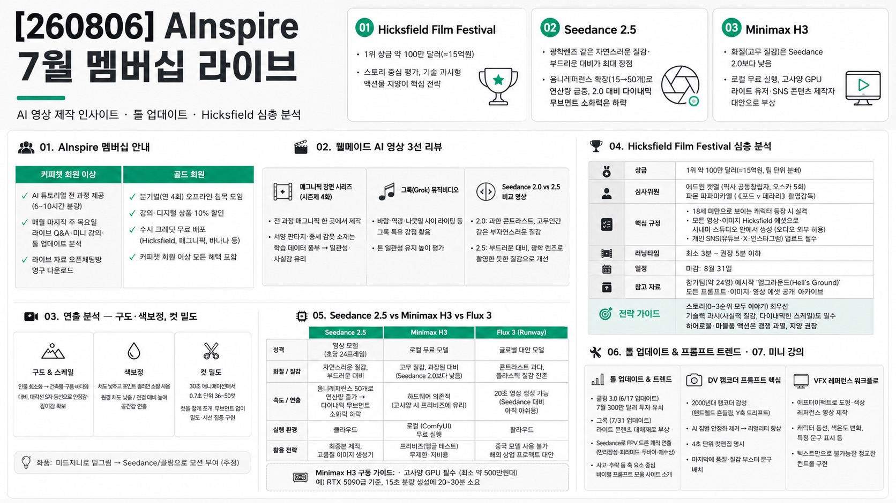

AInspireMORNING DIGEST · 2026-08-07 · AInspire🎬 영상
[260806] AInspire 7월 멤버십 라이브

01핵심 개요
항목
내용
채널
AInspire
제목
[260806] AInspire 7월 멤버십 라이브
핵심결론 1
Hicksfield Film Festival(1위 상금 약 100만 달러≈15억)이 AI 영상 업계 최대 이벤트로 부상했으며, 심사위원 성향상 "이야기" 우선·기술 과시형 액션물 지양이 핵심 전략이다
핵심결론 2
Seedance 2.5는 광학렌즈 같은 자연스러운 질감·부드러운 대비가 최대 장점이지만, 옴니레퍼런스 확장(15→50개)으로 연산량이 급증해 2.0보다 빠른 액션·다이내믹 카메라 무브먼트 소화력은 오히려 떨어졌다
핵심결론 3
Minimax H3는 화질(고무 질감)에서 Seedance 2.0보다도 낮지만 로컬 무료 실행이 가능해, 고사양 GPU(최소 500만원대)를 갖춘 라이트 유저·SNS 콘텐츠 제작자에게 대안으로 부상했다
02핵심 기능/내용 구조
1) AInspire 멤버십 안내
커피챗 회원 이상과 골드 회원 두 등급이 있으며, 유튜브에는 요약본만 올라가는 AI 튜토리얼 전 과정(6~10시간 분량)을 멤버십 전용으로 제공한다. (0:00)
매월 마지막 주 목요일 오후 8시 라이브 Q&A·미니 강의·AI 툴 업데이트 분석을 진행하고, 라이브 자료는 오픈채팅방에서 영구 다운로드할 수 있다.
골드 회원은 분기별(연 4회) 오프라인 침목 모임에 참여할 수 있고, 강의·디지털 상품 10% 할인 및 수시 크레딧(Hicksfield, 매그니픽, 바나나 등) 무료 배포 이벤트 혜택을 받는다.
2) 웰메이드 AI 영상 3선 리뷰
매그니픽으로 시즌제 4화까지 제작된 장편 시리즈: 전 과정을 매그니픽 한 곳에서 제작했으며, 서양 판타지·중세 갑옷 소재는 학습 데이터가 풍부해 일관성과 사실감에서 유리하다고 분석했다. (12:39)
그록(Grok)만으로 만든 뮤직비디오: 바람에 날리는 천·역광·나뭇잎 사이 라이팅 등 그록 특유의 장점을 살려 톤 일관성을 유지한 점을 높이 평가했다.
Seedance 2.0 vs 2.5 비교 영상: 2.0은 콘트라스트가 과해 "고무인간" 같은 부자연스러운 질감이 있었던 반면, 2.5는 대비가 부드럽고 광학 렌즈로 촬영한 듯한 질감으로 개선됐다고 설명했다. (49:52)
3) 연출 분석 — 구도·색보정, 컷 밀도
"천공 시리즈"를 예로, 인물을 극소화해 건축물·구름·바다와 대비시키는 스케일 연출, 대각선 S자 동선으로 안정감과 깊이감을 확보하는 구도, 채도를 낮추고 포인트 컬러만 소량 사용해 고급스러움을 만드는 색보정 기법을 분석했다.
원경은 채도를 낮추고 전경은 대비를 높여 공간감을 만든 점도 짚었으며, 화풍은 미드저니로 밑그림을 그린 뒤 Seedance/클링으로 모션을 준 것으로 추정했다.
30초 애니메이션에서 컷을 0.7초 단위로 36~50컷까지 밀어붙인 편집 사례를 소개하며, 컷을 잘게 쪼개는 것만으로도 다이내믹한 카메라 무브먼트 없이 밀도와 시선 집중을 만들 수 있다고 설명했다.
4) Hicksfield Film Festival 심층 분석
1위 상금 약 100만 달러(약 15억원, 팀 단위 분배), 심사위원은 픽사 공동창립자 출신 에드윈 캣멀(오스카 5회 수상)과 영화 《포드 v 페라리》 촬영감독 파돈 파파미카엘.
캣멀은 정서적 진실·삶에서 관철된 원천적 소재를 높이 평가하고 기술 과시 목적의 액션·VFX 떡칠 작품에는 낮은 점수를 준 이력이 있으며, 파파미카엘은 자연광·클로즈업 연기·필름 질감·절제된 구도를 선호한다고 분석했다.
18세 미만으로 보이는 캐릭터 등장 시 실격, 모든 영상·이미지는 Hicksfield 에셋으로 시네마 스튜디오 안에서 생성해야 하며(오디오는 외부 제작 허용), 개인 SNS(유튜브·X·인스타그램)에 업로드해야만 제출이 인정된다. (86:22)
러닝타임은 최소 3분~권장 5분 이하이며, 참가팀(약 24명)이 만든 90분짜리 예시작 "헬그라운드(Hell's Ground)"의 모든 프롬프트·이미지·영상 에셋이 공개돼 있어 분석 자료로 활용할 수 있다.
마감은 8월 31일이며, 진행자는 스토리(0~3순위 모두 이야기)를 최우선으로 하되 기술력 과시(사실적 질감, 다이내믹한 스케일)도 놓치면 안 된다고 강조했고, 히어로물·마블풍 액션은 경쟁이 몰려 "자살행"이라고 경고했다.
5) Seedance 2.5 vs Minimax H3 vs Flux 3
Seedance는 영상 모델이지만 1초당 24프레임의 연속 이미지를 생성하는 특성상 현존 최고의 "이미지 툴"이기도 하다고 주장했으며, 캐릭터 시트 하나만으로 영화 한 편(헬그라운드)을 만든 Hicksfield 사례를 근거로 들었다.
Minimax H3는 품질(고무 질감, 과장된 대비)이 Seedance 2.0보다 낮지만 무료·로컬 실행이 가능해 화제가 됐으며, 원활한 구동에는 최소 약 500만원대 그래픽카드(RTX 5090급이면 15초 분량 생성에 20~30분)가 필요하다고 안내했다. (59:04)
인플루언서 "테크할라"가 제안한 하이브리드 워크플로: 나노바나나로 캐릭터 스틸 이미지 생성 → Minimax H3로 무제한·저비용 프리비즈(카메라 앵글 테스트) → 최종본은 Seedance로 재생성.
Flux 3(Runway)는 20초 영상 생성이 가능해졌지만 아직 Seedance 대비 콘트라스트 과다·플라스틱 질감이 남아 있으며, 중국 모델(Seedance/클링)을 저작권 이슈로 쓸 수 없는 넷플릭스·HBO 등 해외 상업 프로젝트의 대안으로 언급됐다.
6) AI 툴 업데이트 & 바이럴 프롬프트 트렌드
클링 3.0(6월 17일 업데이트)이 7월 300만 달러 투자를 유치해 후속 대응이 기대된다고 전했다.
그록(7월 31일 업데이트)도 라이트한 콘텐츠 대체재로 자리잡고 있다고 소개했다.
Seedance로 FPV 드론이 만리장성·피라미드·두바이 빌딩·예수상을 통과하는 궤적을 그려 다이내믹 씬을 만든 사례, 사고·추락 등 훅(hook) 요소로 조회수를 노리는 바이럴 프롬프트 모음 사이트를 소개했다. (76:23)
7) 미니 강의 — 프롬프트 구조·VFX 레퍼런스 워크플로
"DV 캠코더" 프롬프트: 2000년대 캠코더 감성(자연스러운 핸드헬드 흔들림, Y축 드리프트)을 의도적으로 넣어 AI 특유의 짐벌 안정화 느낌을 없애는 것이 오히려 리얼리티를 높이며, 4초 단위 컷팬집 명시와 마지막 품질·질감 부스터 문구 배치가 브이로그형 프롬프트의 핵심 구조라고 설명했다.
애프터이펙트로 만든 단순 도형·색상 레퍼런스 영상(예: 캐릭터 동선을 나타낸 졸라맨, 네온사인 색온도 변화)을 AI 영상 생성 시 참조 입력으로 활용하면, 텍스트 프롬프트만으로는 불가능한 정교한 컨트롤(조명 색 변화, 특정 문구 표시 등)이 가능하다고 시연했다.
03기술적 맥락
Seedance 2.5는 옴니레퍼런스 슬롯을 15개에서 50개로 확장했는데, 단순 곱연산이 아니라 경우의 수까지 고려하면 토큰·연산량이 수만 배 늘어날 수 있어 서버 부하가 커졌고, 이로 인해 빠른 액션·FPV 드론 무브먼트 등 2.0에서 가능했던 다이내믹 연출이 2.5에서는 오히려 제한되는 트레이드오프가 생겼다고 분석했다.
Minimax H3는 ComfyUI 기반 로컬 설치로 구동되며 그래픽카드 VRAM에 따라 자동으로 480p로 다운그레이드되거나 생성 시간이 크게 늘어나는 하드웨어 의존성이 있다.
Hicksfield 결과물은 모두 Hicksfield 자체 시네마 스튜디오 안에서 생성해야 하며, 참가팀의 모든 프롬프트·에셋이 공개 아카이브로 남아 다른 참가자가 참고할 수 있는 구조다.
04전략적 의미
AI 영상 제작에서 "이미지 먼저 뽑고 영상화"하던 기존 워크플로 대신, Seedance처럼 초당 24프레임을 뽑아내는 영상 모델을 사실상 최고의 이미지 생성기로 활용하는 역발상 워크플로(영상에서 프레임 캡처 → 캐릭터 시트 재구성)가 부상하고 있다.
Hicksfield 같은 대형 AI 영화제 참가는 상금 획득 여부와 무관하게 AI 크리에이터 개인 브랜딩·해외 진출의 지렛대로 작용할 수 있으며, 국내 대행사가 회의적인 것과 달리 해외 에이전시들의 관심이 커지고 있어 국내외 기회 격차가 벌어지고 있다.
고품질·고비용(Seedance) 모델과 무료·저품질(Minimax H3) 모델을 프리비즈-파이널 단계로 조합하는 하이브리드 워크플로가 비용 효율성과 완성도를 동시에 잡는 실전 전략으로 자리잡고 있다.
05핵심 워크플로·방법론
대형 AI 영화제(Hicksfield 등) 출품 전 룰·심사위원 이력·과거 수상작 성향을 최소 하루 이틀 분석해 전략을 수립한다.
뻔한 판타지·히어로 액션물 대신 차별화된 소재(정적이고 스케일이 큰 연출, 진짜 이야기 중심)를 선정한다.
캐릭터 시트(스틸 이미지) 하나만 준비해 Seedance로 직접 영상화하고, 필요 시 생성된 영상 프레임을 캡처해 재차 캐릭터 시트로 역활용한다.
비용 부담이 큰 경우 Minimax H3로 무제한 프리비즈(카메라 앵글·구도 테스트)를 먼저 수행한 뒤, 최종본만 Seedance 2.5로 생성한다.
FPV 드론 궤적이나 조명 색 변화처럼 텍스트만으로 설명하기 어려운 요소는 지도 위 경로선, 애프터이펙트 도형·색상 애니메이션 등 시각적 레퍼런스를 만들어 참조 입력으로 첨부한다.
브이로그풍 콘텐츠는 DV 캠코더 감성(핸드헬드 흔들림, 4초 단위 컷 명시, 마지막 품질 부스터 문구)의 프롬프트 구조를 활용한다.
06활용 시나리오
AI 크리에이터가 Hicksfield Film Festival(마감 8월 31일)에 출품작을 준비하며 심사위원 성향에 맞춰 이야기 중심의 차별화된 단편을 기획할 때.
예산이 제한된 개인·소규모 팀이 Minimax H3로 무료 프리비즈를 마친 뒤 Seedance 2.5로 최종 고품질 렌더링만 수행해 비용을 절감하고 싶을 때.
넷플릭스·HBO 등 중국 AI 모델 사용이 금지된 해외 상업 프로젝트에서 Flux 3 같은 비중국 대안 모델을 검토할 때.
SNS 브이로그·AI 인플루언서 콘텐츠 제작자가 DV 캠코더풍 프롬프트 구조로 리얼한 핸드헬드 질감의 영상을 양산하고 싶을 때.
07현황 및 전망
Seedance 2.5는 질감 면에서는 진일보했지만 연산량 제한으로 다이내믹 액션 표현력이 후퇴한 트레이드오프가 있어, 당분간 정적·클로즈업 연기 중심 작품과 다이내믹 액션 중심 작품을 2.0/2.5로 나눠 쓰는 하이브리드 활용이 이어질 것으로 보인다.
클링 3.0의 대규모 투자 유치로 후속 모델 경쟁이 가속화될 전망이며, Flux 3 같은 대안 모델의 등장은 상업적으로 중국 모델을 쓸 수 없는 해외 프로젝트 시장의 수요를 반영한다.
Hicksfield Film Festival은 역대 최대 규모의 참가가 예상되며, AI 크리에이터의 해외 진출·개인 브랜딩 통로로서 국제 영화제·해외 플랫폼 활동의 중요성이 더 커질 것으로 전망된다.